{kind=link}
{kind=link}
Annual Energy Outlook 2014
Release Date: May 7, 2014 | Next Release Date: March 2015 | See schedule | full report
Market Trends: Natural gas
Industrial and electric power sectors drive growth in U.S. natural gas consumption
U.S. total natural gas consumption grows from 25.6 trillion cubic feet (Tcf) in 2012 to 31.6 Tcf in 2040 in the AEO2014 Reference case. Natural gas use increases in all of the end-use sectors except residential (Figure MT-39). Natural gas use for residential space heating declines as a result of population shifts to warmer regions of the country and improvements in appliance efficiency.
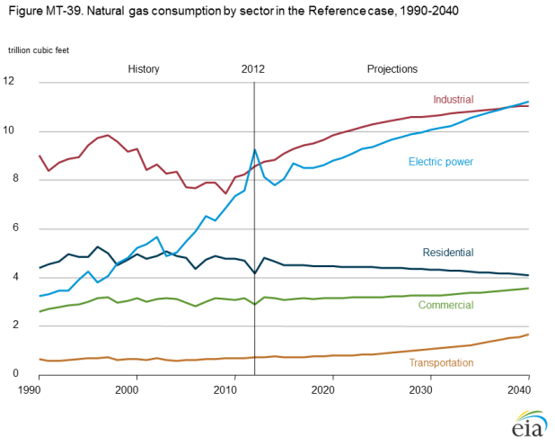
figure data
Consumption of natural gas for electric power generation grows by about 2 Tcf and makes up about 33% of the increase in total natural gas consumption by 2040. Relatively low natural gas prices make natural gas an attractive fuel for serving increased load. Natural gas is also the fuel most often used to replace older coal-fired generation as it is retired.
From 2012 to 2040, natural gas consumption in the industrial sector increases by 2.5 Tcf, an average of 0.9%/year, representing about 26% of the total increase in natural gas consumption. As industrial output grows, the energy-intensive industries take advantage of relatively low natural gas prices, particularly through 2028. After 2028, industrial sector consumption of natural gas continues to grow but at a somewhat slower rate, in response to rising prices.
Although transportation use currently accounts for only a small portion of total U.S. natural gas consumption, natural gas use by heavy-duty vehicles (HDVs), trains, and ships shows the largest percentage growth of any fuel in the projection. Consumption in the transportation sector, excluding natural gas use at compressor stations, grows from about 40 billion cubic feet (Bcf) in 2012 to 850 Bcf in 2040.
Natural gas prices rise with an expected increase in production costs
Average annual U.S. natural gas prices have remained relatively low over the past several years as a result of the availability of abundant domestic resources and the application of improved production technologies. To provide the supplies necessary to meet growth in natural gas consumption and a rise in exports in the AEO2014 Reference case, producers move into areas where the recovery of natural gas is more difficult and expensive, which leads to an increase in Henry Hub spot prices over the projection period. Henry Hub spot prices for natural gas increase by an average of 3.7%/year in the Reference case, from $2.75/million Btu (MMBtu) in 2012 to $7.65/MMBtu (2012 dollars) in 2040 (Figure MT-40).
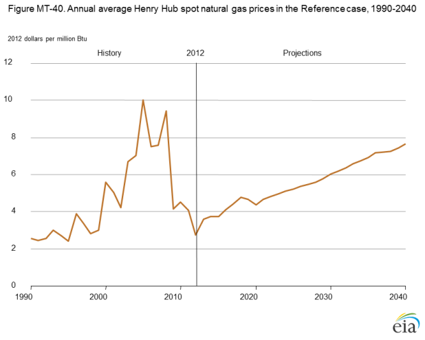
figure data
Growth in demand for natural gas, largely from the electric power and industrial sectors and for liquefied natural gas (LNG) exports, results in upward pressure on prices, particularly in the 2015-18 period. Delivered prices to residential, commercial, industrial, and electric power consumers generally rise with Henry Hub prices in the projection, but the lower 48 average spot price increases at a slightly slower rate than the Henry Hub spot price, because regional production growth in areas that do not serve the Henry Hub is somewhat faster than growth in areas that supply the Henry Hub. In particular, dry gas production in the Marcellus shale play, which predominantly serves the Northeastern and Mid-Atlantic regions, grows from 1.9 Tcf in 2012 to 5.0 Tcf in 2022 in the Reference case, before declining to 4.6 Tcf in 2040. Total onshore production in the Northeast region grows on average by 3.2%/year, from 3.3 Tcf in 2012 to 8.1 Tcf in 2040, while combined onshore and offshore production in the Gulf region grows by 2.1%/year, from 7.3 Tcf in 2012 to 13.0 Tcf in 2040.
Natural gas prices depend on economic growth and resource recovery rates among other factors
The projection of natural gas prices depends on many factors, including macroeconomic growth rates and expected rates of resource recovery from natural gas wells. Higher rates of economic growth lead to increased consumption of natural gas, primarily in response to their effects on housing starts, commercial floorspace, and industrial output. In the High Economic Growth case, higher levels of consumption result in more rapid increases both in depletion of natural gas resources and in the cost of developing new production, pushing natural gas prices higher. The converse is true in the Low Economic Growth case (Figure MT-41). In the High and Low Economic Growth cases, the price rises by 4.0%/year and 3.5%/year, respectively, compared with 3.7%/year in the Reference case.
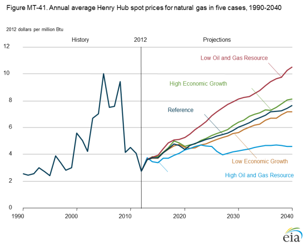
figure data
The rate of resource recovery from oil and natural gas wells has a direct impact on the cost per unit of production and, in turn, prices. The High Oil and Gas Resource case assumes higher estimates for recoverable crude oil and natural gas resources in tight wells and shale formations and for offshore resources in the lower 48 states and Alaska than in the Reference case. The Low Oil and Gas Resource case assumes lower estimated ultimate recovery of natural gas from each shale well or tight well than in the Reference case. In the Low and High Oil and Gas Resource cases, Henry Hub spot natural gas prices increase by 4.9%/year and 1.8%/year, respectively. (An article in the Issues in focus section, "U.S. tight oil production: Alternative supply projections and an overview of EIA's analysis of well-level data aggregated to the county level," provides more information on the alternative resource cases.)
In both cases, there are mitigating effects that dampen the initial price response from the demand or supply shift. For example, lower natural gas prices lead to increases in natural gas exports and demand, which place some upward pressure on natural gas prices.
With production growing faster than use, the U.S. becomes a net exporter of natural gas
In the AEO2014 Reference case, natural gas production grows by an average rate of 1.6%/year from 2012 to 2040, more than double the 0.8% annual growth rate of total U.S. consumption over the period. The growth in production meets increasing demand and exports (liquefied natural gas [LNG] and pipeline exports), while also making up for a drop in natural gas imports. The United States becomes a net exporter of natural gas before 2020.
The development of shale gas resources spurs growth in natural gas production, with producers seeing higher prices as a result of growing demand, especially from both the industrial and electricity generation sectors. Growing LNG exports also support higher natural gas prices.
The United States transitions from being a net importer of 1.5 Tcf of natural gas in 2012 to a net exporter of 5.8 Tcf in 2040, with 88% of the rise in net exports (6.5 Tcf) occurring by 2030, followed by slower growth through 2040 (Figure MT-42).
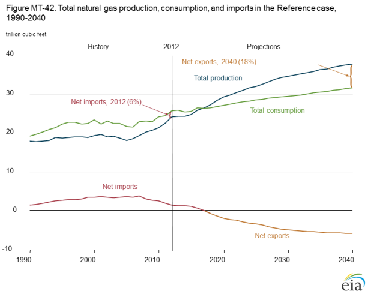
figure data
Net LNG exports, primarily to Asia, increase by 3.5 Tcf from 2012 to 2030, then remain flat through 2040. Prospects for future LNG exports are uncertain, depending on many factors that are difficult to anticipate. The increase in net LNG exports to Asia through 2030 accounts for 55% of the rise in total net natural gas exports, with the remainder coming from decreased net pipeline imports from Canada and increased net pipeline exports to Mexico. Net pipeline imports from Canada drop from 2.0 Tcf in 2012 to 0.4 Tcf in 2030, mainly as a result of lower imports to the western United States. Imports from Canada increase to 0.7 Tcf in 2040, with higher imports into the northeastern United States. In contrast, net pipeline exports to Mexico grow steadily, from 0.6 Tcf in 2012 to 3.1 Tcf in 2040.
U.S. natural gas production, use, and exports all are affected by oil prices
U.S. natural gas production is affected by crude oil prices primarily through changes in natural gas consumption and exports. Across the oil price cases, the largest changes in consumption are seen for natural gas consumed in transportation and natural gas exported as LNG.
The profitability of natural gas as a transportation fuel or as LNG for export depends primarily on the price differential between crude oil and natural gas. For example, in the Low Oil Price case, the average difference between oil prices and natural gas prices from 2012 through 2040 is about $7.70 per million Btu (MMBtu). With that low price differential, virtually no natural gas is consumed in the transportation sector, and little LNG is exported. In the High Oil Price case, in contrast, the average price difference is about $21.90/MMBtu, which provides substantial incentive for direct use of natural gas in transportation and for conversion to LNG for export.
Across the oil price cases, total natural gas production varies by 8.3 Tcf in 2040 (Figure MT-43), with changes in LNG exports accounting for 6.3 Tcf and changes in direct consumption for transportation accounting for 2.2 Tcf. The increase in LNG exports and transportation consumption is offset to some extent by lower natural gas consumption in other sectors, with spot prices for natural gas from 2012 to 2040 averaging about $0.70/MMBtu higher in the High Oil Price case than in the Low Oil Price case.
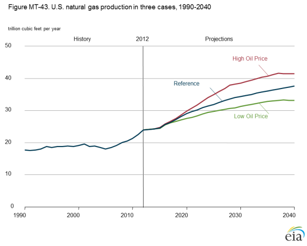
figure data
Shale gas provides the largest source of growth in U.S. natural gas supply
The 56% increase in total natural gas production from 2012 to 2040 in the AEO2014 Reference Case results from increased development of shale gas, tight gas, and offshore natural gas resources (Figure MT-44). Shale gas production is the largest contributor, growing by more than 10 Tcf, from 9.7 Tcf in 2012 to 19.8 Tcf in 2040. The shale gas share of total U.S. natural gas production increases from 40% in 2012 to 53% in 2040. Tight gas production and offshore gas production increase by 73% and 78%, respectively, from 2012 to 2040, but their shares of total production remain relatively constant.
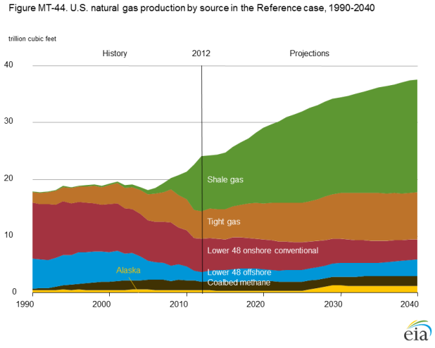
figure data
From 2017 to 2022, U.S. offshore natural gas production declines by 0.3 Tcf, as offshore exploration and development activities are directed primarily toward oil resources in the Gulf of Mexico. Offshore natural gas production increases after 2022, growing to 2.9 Tcf in 2040, as natural gas prices rise.
Alaska’s natural gas production also increases during the projection period, because of Alaska LNG exports to overseas customers, beginning in 2026 and increasing to 0.8 Tcf (2.2 Bcf/d) in 2029. Alaska’s LNG exports level off at 0.8 Tcf per year over the last decade of the projec-tion. Alaska’s total natural gas production in 2040 is 1.2 Tcf.
Although U.S. natural gas production rises throughout the projection, the mix of sources changes over time. Onshore nonassociated production (from sources other than tight gas, shale gas, and coalbed methane) declines from 3.9 Tcf in 2012 to 1.6 Tcf in 2040, and in 2040 it accounts for only about 4% of total domestic production, down from 16% in 2012.
U.S. exports to North American and overseas gas markets increase as gas production rises
With relatively low natural gas prices in the AEO2014 Reference
case, the United States becomes a net exporter of natural
gas in 2018, with net exports growing to 5.8 Tcf in 2040. Most
of the projected growth in exports consists of LNG exported to
overseas markets. From 2012 to 2040, U.S. net exports of LNG
increase by 3.5 Tcf (Figure MT-45), including 0.8 Tcf of LNG
originating in south-central Alaska, with the remaining volumes
originating from export terminals located along the Atlantic and
Gulf coasts. In general, future U.S. LNG exports depend on a
number of factors that are difficult to anticipate, including the
speed and extent of price convergence in global natural gas
markets, the extent to which natural gas competes with oil in
U.S. and international gas markets, and the pace of natural gas
supply growth outside the United States.
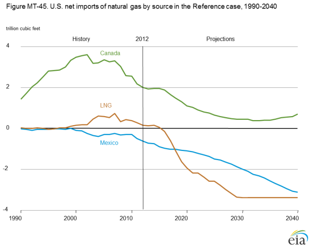
figure data
The next-largest growth market for U.S. natural gas exports is pipeline exports to Mexico, which increase from 0.6 Tcf in 2012 to 3.1 Tcf in 2040. The increase in exports to Mexico reflects a growing gap between Mexico’s natural gas consumption and production. However, Mexico’s recently enacted legislation to restructure its oil and gas industry could reduce the need for U.S. natural gas exports to Mexico in the future.
Net natural gas imports from Canada decline through 2033, when they reach a low point of about 0.4 Tcf. After 2033, higher natural gas prices in the lower 48 improve the economics of Canadian natural gas exports to the U.S. West Coast. In 2040, net U.S. imports of natural gas from Canada total about 0.7 Tcf.
LNG export growth depends on price and productivity assumptions
In the AEO2014 Reference case, growing natural gas production from shale gas and tight oil formations supports an increase in U.S. exports of LNG and pipeline gas. Net exports of LNG increase by 3.5 Tcf from 2012 to 2040, representing 48% of the total increase in U.S. natural gas net exports over the period. The United States becomes a net LNG exporter in 2016, with gross exports reaching their peak level of 3.5 Tcf in 2030.
The United States is a net LNG exporter in all of the AEO2014 oil price and resource cases; however, LNG export levels vary significantly by case. In the High Oil Price case, where both global LNG demand and LNG prices are higher than in the Reference case, LNG exports increase to 6.7 Tcf in 2028 and remain at that level through 2040 (Figure MT-46). Conversely, in the Low Oil Price case, gross LNG exports increase to only 0.8 Tcf in 2018, where they remain through most of the projection period. The LNG export projections in AEO2014 are based on a generalized economic evaluation and do not reflect a specific evaluation or knowledge of decisions on pending LNG export applications.
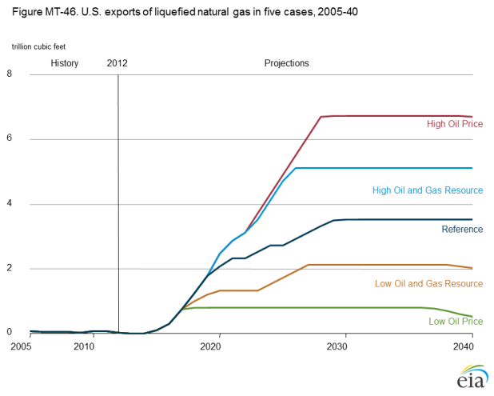
figure data
In the High Oil and Gas Resource case, large production increases put downward pressure on U.S. natural gas prices, and as a result LNG exports climb to 5.1 Tcf after 2025. The Low Oil and Gas Resource case assumes lower natural gas production and higher domestic gas prices. Gross LNG exports in the Low Oil and Gas Resource case reach 2.1 Tcf by 2027.
U.S. natural gas production rates depend on resource availability and production costs
Prospects for production from tight oil and shale gas resources are uncertain, both because large portions of the formations have little or no production history, and because future technology could increase well productivity while reducing costs. The Low Oil and Gas Resource and High Oil and Gas Resource cases illustrate the potential impacts of changes in the Reference case assumptions regarding technology advances and the resource size and quality.
The High Oil and Gas Resource case assumes (1) higher estimates
of onshore lower 48 tight oil, tight gas, and shale gas
resources than in the Reference case, as a result of higher estimated
ultimate recovery (EUR) per well and closer well spacing;
(2) tight oil development in Alaska; (3) higher estimates
of offshore resources in Alaska and the lower 48 states; and
(4) higher rates of long-term technology improvement. In the
High Resource case, higher well productivity reduces development
and production costs per unit, resulting in more and
earlier resource development than in the Reference case. With
the greater abundance of less-expensive shale gas resources,
cumulative shale gas production from 2012 through 2040
totals 540 Tcf, as compared with 442 Tcf in the Reference
case. In the Reference case and the High Resource case, total
natural gas production in 2040 grows to 37.5 Tcf and 45.5 Tcf
per year, respectively.
In the Low Oil and Gas Resource case, which assumes lower tight oil, tight gas, and shale gas resources than in the Reference case, total natural gas production plateaus at just under 29 Tcf per year from 2027 through 2036, then declines to 28.1 Tcf in 2040 (Figure MT-47). Shale gas production peaks in 2030 at 13.1 Tcf and declines to 11.6 Tcf in 2040. From 2012 to 2040, cumulative shale gas production totals 341 Tcf in the Low Oil and Gas Resource case.
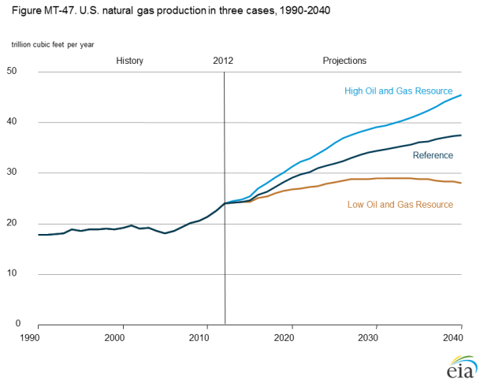
figure data
Marcellus shale gas production growth changes U.S. natural gas transportation patterns
Historically, natural gas produced in Texas, Louisiana, Oklahoma, and the offshore Gulf of Mexico has been transported to markets east of the Mississippi River. In addition, significant volumes of natural gas have been transported from Canada and the Rocky Mountains to serve the same markets. However, the advent of large-scale natural gas production in the Marcellus shale formation, located in Appalachia, will alter natural gas transportation patterns east of the Mississippi River.
In the AEO2014 Reference Case, natural gas production from the Marcellus shale grows from 1.9 Tcf in 2012 to a peak production volume of about 5.0 Tcf per year from 2022 through 2025. Marcellus shale gas production could provide up to 39% of the natural gas needed to meet demand in markets east of the Mississippi River during that period—up from 16% in 2012. Although Marcellus gas production declines after 2024 in the Reference case, it still provides enough natural gas to meet at least 31% of the region’s total demand for natural gas through 2040 (Figure MT-48).
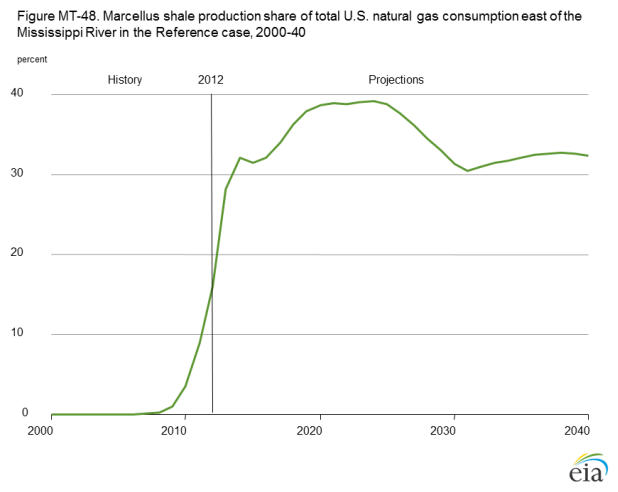
figure data
Marcellus natural gas exceeds 100% of the demand projected for the New England and Mid-Atlantic Census Divisions from 2016 through 2040 in the Reference case, requiring transportation of some Marcellus gas to other markets. During the expected peak production period for the Marcellus shale, from 2022 through 2025, its total production exceeds natural gas consumption in the New England and Middle Atlantic regions by more than 1.0 Tcf over the period.
Natural gas-fired generation grows strongly in the electric power sector
Consumption of natural gas by the U.S. electric power sector grows by an average of 0.7%/year from 2012 to 2040 in the AEO2014 Reference case. That growth is equivalent to 42% of the total increase in electricity generation over the period. While the coal-fired share of total generation in the electric power sector declines from 39% in 2012 to 34% in 2040, the natural gas share rises from 29% to 33%.
The increase in natural gas-fired generation is generally more pronounced in regions where coal-fired power plants are retired, including the SERC Reliability Corporation (SERC) and ReliabilityFirst Corporation (RFC) regions (Figure MT-49). The retirement of coal-fired capacity in the SERC region from 2012 to 2040, at 12.9 GW, is the country's second largest, and its increase in natural gas-fired generation over the same period, at 109 million MWh, is the largest. The largest decrease in coal-fired capacity (21.7 GW) is in the RFC region, which also has the thirdlargest increase in natural gas-fired generation, at 103 million MWh.
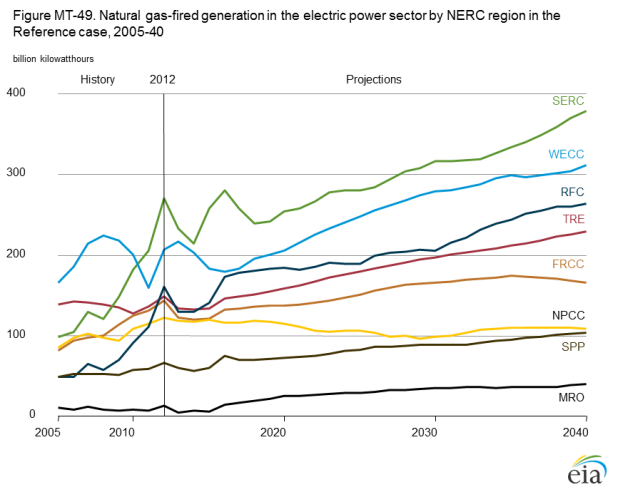
figure data
Two other regions with large increases in natural gas-fired generation
in the Reference case are the Western Electricity Coordinating
Council (WECC) and the Texas Reliability Entity (TRE). Those
two regions do not have large retirements of coal-fired generation
capacity, but they do have significant overall growth in electricity
demand, most of which is met with natural gas-fired generation.
WECC has the country’s second-largest increase in natural gasfired
generation from 2012 to 2040 (105 million MWh), and TRE
has the fourth-largest increase (81 million MWh).
In the RFC and TRE regions, natural gas-fired generation meets the vast majority of growth in electricity demand through 2040. Despite retirements of coal units, coal generation still meets a significant portion of demand in the SERC region. In the WECC region, renewables meet a significant portion of demand growth.
In This Section
- Industrial and electric power sectors drive growth in U.S. natural gas consumption
- Natural gas prices rise with an expected increase in production costs
- Natural gas prices depend on economic growth and resource recovery rates among other factors
- With production growing faster than use, the U.S. becomes a net exporter of natural gas
- U.S. natural gas production, use, and exports all are affected by oil prices
- Shale gas provides the largest source of growth in U.S. natural gas supply
- U.S. exports to North American and overseas gas markets increase as gas production rises
- LNG export growth depends on price and productivity assumptions
- U.S. natural gas production rates depend on resource availability and production costs
- Marcellus shale gas production growth changes U.S. natural gas transportation patterns
- Natural gas-fired generation grows strongly in the electric power sector